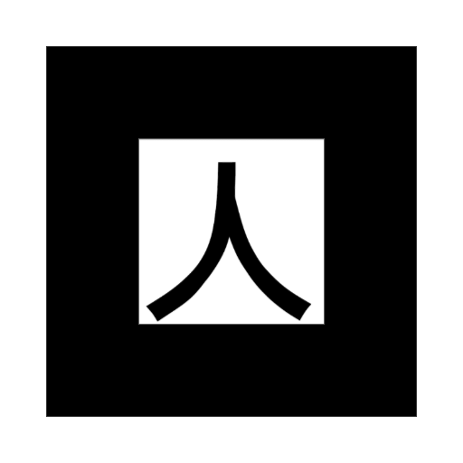

متحف الواقع المعزّز للثقافة السعودية
مرحبًا بك في جولة رقمية تربط بين التراث الصحراوي والضيافة والحرف العربية الأصيلة على أرض المملكة العربية السعودية. من خلال كاميرا جهازك وثلاث ماركرات، ستُكتشف خيمة عربية تعبّر عن الحياة البدوية وحِماية الموئل، ثم دلة سعودية رمزًا للكرم والقهوة العربية، ثم سيفًا عربيًا شاهدًا على الفتوة والصناعة الفنية للمعدن. عند مسح كل ماركر في دوره، يظهر المجسم ثلاثي الأبعاد وشرح مختصر؛ ويبقى المجسم والنص ظاهرين بعد إزالة الماركر من أمام الكاميرا إلى أن تضغط «إغلاق» لتنتقل للقطعة التالية — كما رغبت.
كيف تبدأ الزيارة؟
- جهّز الماركرات الثلاثة بالترتيب: ١ — Hiro (الخيمة)، ٢ — Kanji (الدلة)، ٣ — حرف A (السيف). يمكن طباعتها أو عرضها على شاشة ثانية بحجم مناسب.
- اضغط «ابدأ الزيارة» واسمح باستخدام الكاميرا — يُفضّل Chrome على الهاتف، والتصفح من localhost أو https لأن الواقع المعزز يحتاج اتصالًا آمنًا.
- ابدأ بماركر Hiro فقط في الخطوة الأولى؛ بعد ظهور النموذج يمكنك إبعاد الماركر، والمجسم يبقى في مكانه مع الشرح حتى تضغط إغلاق.

